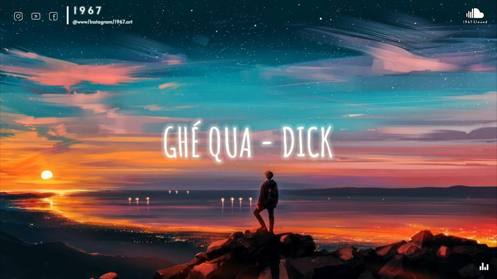

121170902 阮明德 hw2

Dick, Tofu, PC...
Ghé Qua
Anh lại muốn cùng em đi về nơi bình yên vàng nắng chiều
Phía hoàng hôn vẫn còn sương mai còn chưa hoà tan vào cánh diều
Ngồi cạnh nhau trên đồi hoa thoảng mùi vị phấn hoa
Chân trời hiện rõ qua ánh kẽ tay ánh đèn đường thị trấn xa
Tháng mười một vẫn chờ hoài đông chí có đôi khi mình gắt gỏng
Gửi tặng em vài ba thỏi son tô duyên tình và sắc mộng
Nếu như yêu nhau mà luôn kề nhau thì có lẽ điều đó là quá dễ
Nên anh chọn cách đoạn tuyệt nhau chia đôi ta trở thành cá thể
Tháng mười hai mưa nặng hạt dù tiết trời hoe nắng cháy
Sẽ không còn khoảng cách anh được ngồi cùng em ở trên chiếc xe gắn máy
Vỡ tan hết niềm khao khát được cùng em đi thật xa
Qua rừng xà biếc tựa bên vách núi bầy chim hót vang mật hoa
Anh còn nhớ có lần tưởng chừng ta không sánh duyên
Ta tìm thấy điểm tương đồng phía bên trong ánh kim
Anh tìm kiếm chuỗi ngày đầu khi chuông cửa vang lên
Và anh nhìn ngắm đoá hoa tươi thắm tặng em giữa ban đêm
Lùi về sau em mãi tiếc nuối chiếc hôn trên bờ môi êm ái
Lòng còn đang say giấc say giấc chiêm bao em cùng tôi lâu dài
Để đời anh lại có em mình cùng nhau sớt chia
Thôi rồi
Sao em đi vội
Cho anh một mình lang thang phố nghiêng
Phố nghiêng huh
Xa xăm cuối trời sau dãy đồi nơi tia nắng vàng đang hấp hối
Ngày muộn màng rồi tàn lụi áng mây gió đông đưa đi khắp lối
Anh lặng im nghe tim mình đập có bình yên nào nơi chốn đây
Một chút kỷ niệm một chút hơi ấm còn vương lại trên kẽ ngón tay
Từ lúc nào anh đã thôi không muốn chỉnh tề vì vẫn đang cô đơn
Em bận với những riêng tư cuộc sống vui cười môi điểm trang tô son
Anh vẫn một mình
Vẫn thường xuyên ghé ngang qua bưu điện
Hay tới thư viện để tìm lại những hình ảnh trong anh còn lưu niệm
Rồi đã lâu không được nghe em nói em đang cảm thấy thật tệ tối nay
Anh vội gác lại những công việc em ở đâu anh tới ngay
Anh lại ngồi sau nghịch ngợm chiếc kẹp tóc em màu cánh gián
Ngoài ô cửa mưa lăn thành dòng vệt sấm chớp vụt lên ánh sáng
Một ngày cứ thế bình thường rồi cứ cuốn trôi theo gió mùa đông
Tháng mười hai lạnh hơn nhiều lắm nhưng giờ chẳng biết áo mới em có vừa không
Tưởng như sương rơi mãi trên lối ai về phố nghiêng
Anh nhớ em và cứ vui mà cứ xem như ta đã từng có duyên
Và em
Xin hãy quên đi những tháng ngày cũ đã xa xưa
Xin hãy thôi nuối tiếc những điều gì mà ta chưa
Ta chưa từng cho nhau một thứ nào khác ngoài chân tình
Nhưng thôi với anh như vậy là đủ chỉ mong em luôn được an bình
Tây Nguyên chiều lộng gió chân trời vỗ cánh đàn chim
Nếu ngày sau gặp lại đó cho anh ngồi cùng hàn huyên
Ta lật lại những trang tuổi trẻ nhật ký cũ loang màu
Và chả biết cảm xúc thế nào khi đọc lại những chữ ban đầu
Lùi về sau em mãi tiếc nuối chiếc hôn trên bờ môi êm ái
Lòng còn đang say giấc say giấc chiêm bao em cùng tôi lâu dài
Để đời anh lại có em mình cùng nhau sớt chia
Thôi rồi
Sao em đi vội
Cho anh một mình lang thang phố nghiêng
Phố nghiêng huh